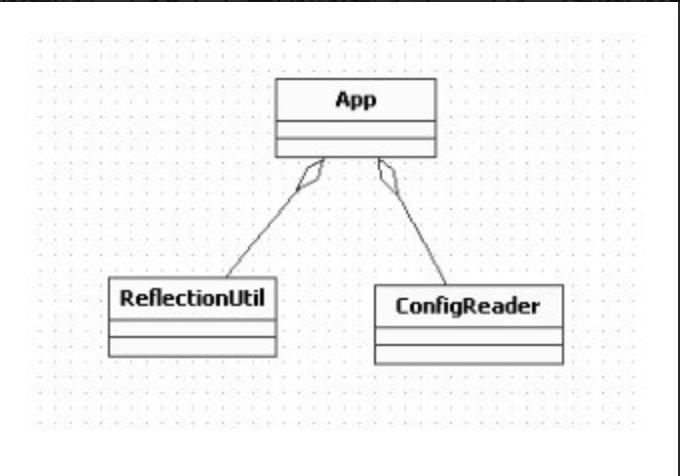
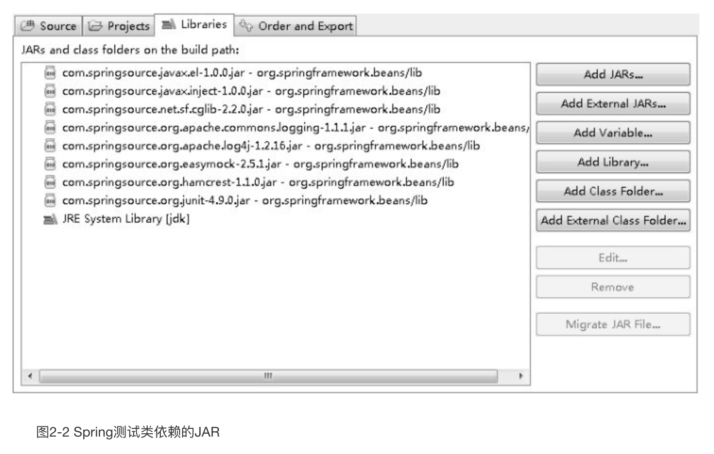
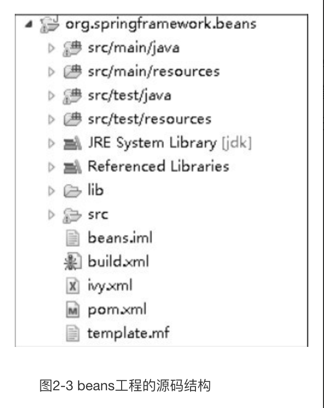
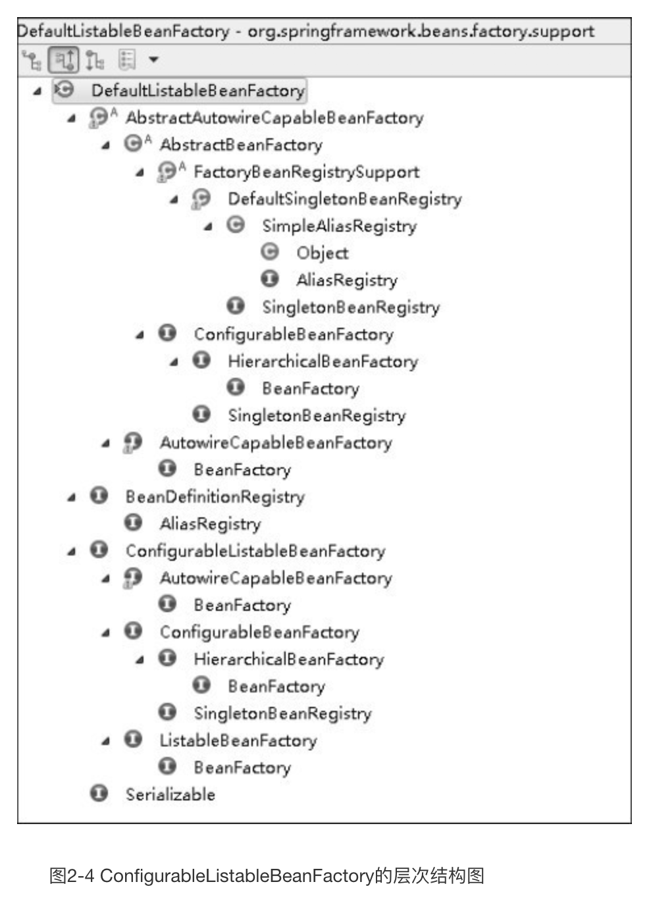
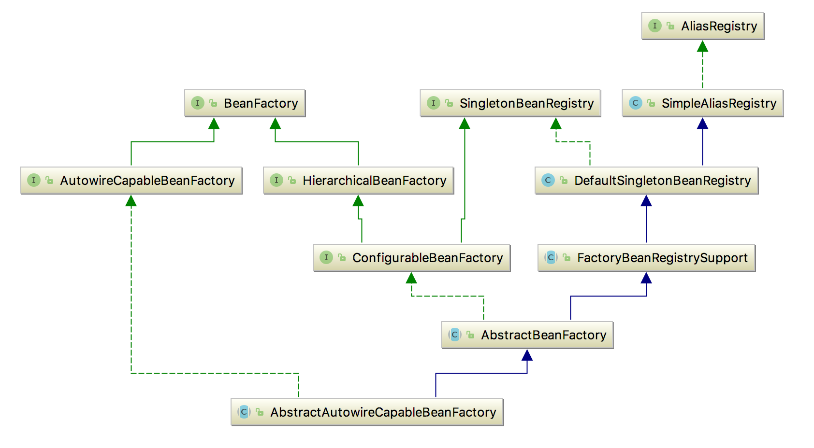
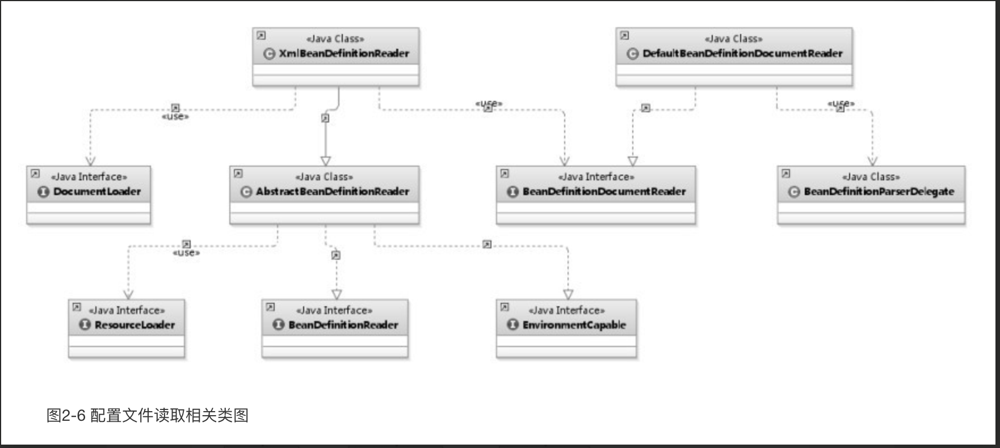
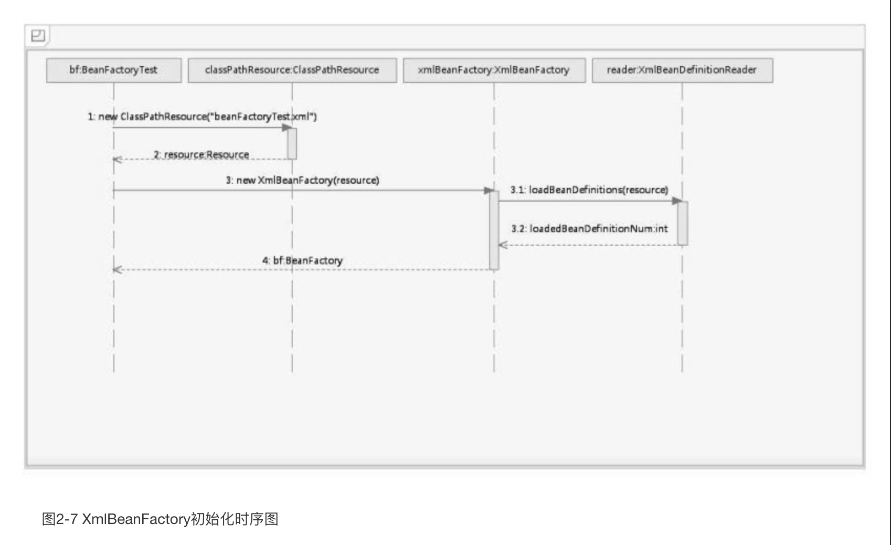
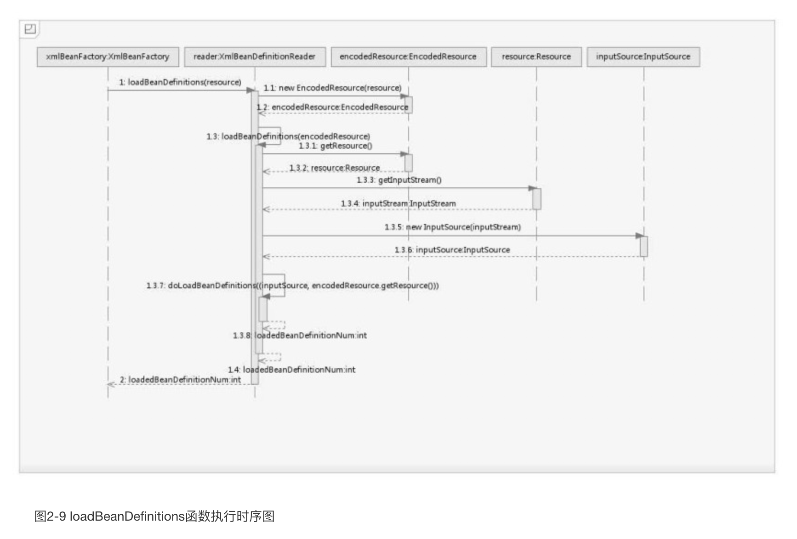

第1章
无
第2章 容器的基本实现
源码分析是一件非常煎熬非常有挑战性的任务，你准备好开始战斗了吗？
在正式开始分析 Spring 源码之前，我们有必要先来回顾一下 Spring 中最简单的用法，尽管我相信您已经对这个例子非常熟悉了。
2.1 容器基本用法
bean是Spring中最核心的东西，因为Spring就像是个大水桶，而bean就像是容器中的水，水桶脱离了水便也没什么用处了，那么我们先看看bean的定义。
1 | public class MyTestBean { |
很普通，bean没有任何特别之处，的确，Spring的目的就是让我们的bean能成为一个纯粹的POJO，这也是Spring所追求的。接下来看看配置文件：1
2
3
4
5
6
7
<beans xmlns="http://www.Springframework.org/schema/beans"
xmlns:xsi="http://www.w3.org/2001/XMLSchema-instance"
xsi:schemaLocation="http://www.Springframework.org/schema/beans http://www. Springframework.
org/schema/beans/Spring-beans.xsd">
<bean id="myTestBean" class="bean.MyTestBean"/>
</beans>
在上面的配置中我们看到了bean的声明方式，尽管Spring中bean的元素定义着N种属性来支撑我们业务的各种应用，但是我们只要声明成这样，基本上就已经可以满足我们的大多数应用了。好了，你可能觉得还有什么，但是，真没了，Spring的入门示例到这里已经结束，我们可以写测试代码测试了。
1 | ("deprecation") |
相信聪明的读者会很快看到我们期望的结果：在Eclipse中显示了Green Bar。
直接使用BeanFactory作为容器对于Spring的使用来说并不多见，甚至是甚少使用，因为在企业级的应用中大多数都会使用的是ApplicationContext（后续章节我们会介绍它们之间的区别），这里只是用于测试，让读者更快更好地分析Spring的内部原理。
OK，我们又复习了一遍Spring，你是不是会很不屑呢？这样的小例子没任何挑战性。嗯，确实，这样的使用是过于简单了，但是本书的目的并不是介绍如何使用Spring，而是帮助您更好地了解 Spring 的内部原理。读者可以自己先想想，上面的一句简单代码都执行了什么样的逻辑呢？这样一句简单代码其实在Spring中执行了太多太多的逻辑，即使笔者用半本书的文字也只能介绍它的大致原理。那么就让我们快速的进入分析状态吧。
2.2 功能分析
现在我们可以来好好分析一下上面测试代码的功能，来探索上面的测试代码中Spring究竟帮助我们完成了什么工作？不管之前你是否使用过Spring，当然，你应该使用过的，毕竟本书面用的是对Spring有一定使用经验的读者，你都应该能猜出来，这段测试代码完成的功能无非就是以下几点。
（1）读取配置文件beanFactoryTest.xml。
（2）根据 beanFactoryTest.xml 中的配置找到对应的类的配置，并实例化。
（3）调用实例化后的实例。
为了更清楚地描述，笔者临时画了设计类图，如图2-1所示，如果想完成我们预想的功能，至少需要3个类。

ConfigReader：用于读取及验证配置文件。我们要用配置文件里面的东西，当然首先要做的就是读取，然后放置在内存中。
ReflectionUtil：用于根据配置文件中的配置进行反射实例化。比如在上例中beanFactoryTest.xml出现的
App：用于完成整个逻辑的串联。
按照最原始的思维方式，整个过程无非如此，但是作为一个风靡世界的优秀源码真的就这么简单吗？
2.3 工程搭建
不如我们首先大致看看 Spring 的源码。在 Spring 源码中，用于实现上面功能的是org.Springframework.beans.jar，我们看源码的时候要打开这个工程，如果我们只使用上面的功能，那就没有必要引入Spring的其他更多的包，当然Core是必须的，还有些依赖的包如图2-2所示。

引入依赖的 JAR 消除掉所有编译错误后，终于可以看源码了。或许你已经知道了答案， Spring 居然用了 N 多代码实现了这个看似很简单的功能，那么这些代码都是做什么用的呢？Spring在架构或者编码的时候又是如何考虑的呢？带着疑问，让我们踏上了研读Spring源码的征程。
2.4 Spring的结构组成
我们首先尝试梳理一下Spring的框架结构，从全局的角度了解一下Spring的结构组成。
2.4.1 beans包的层级结构
笔者认为阅读源码的最好方法是通过示例跟着操作一遍，虽然有时候或者说大多数时候会被复杂的代码绕来绕去，绕到最后已经不知道自己身在何处了，但是，如果配以UML还是可以搞定的。笔者就是按照自己的思路进行分析，并配合必要的UML，希望读者同样可以跟得上思路。
我们先看看整个beans工程的源码结构，如图2-3所示。

beans包中的各个源码包的功能如下。
src/main/java用于展现Spring的主要逻辑。
src/main/resources用于存放系统的配置文件。
src/test/java用于对主要逻辑进行单元测试。
src/test/resources用于存放测试用的配置文件。
2.4.2 核心类介绍
通过beans工程的结构介绍，我们现在对beans的工程结构有了初步的认识，但是在正式开始源码分析之前，有必要了解一下Spring中最核心的两个类。
1．DefaultListableBeanFactory
XmlBeanFactory继承自DefaultListableBeanFactory，而DefaultListableBeanFactory是整个bean加载的核心部分，是 Spring 注册及加载 bean 的默认实现，而对于 XmlBeanFactory 与DefaultListableBeanFactory 不同的地方其实是在 XmlBeanFactory 中使用了自定义的 XML 读取器XmlBeanDefinitionReader，实现了个性化的BeanDefinitionReader读取，DefaultListableBeanFactory继承了 AbstractAutowireCapableBeanFactory 并实现了ConfigurableListableBeanFactory 以及BeanDefinitionRegistry接口。以下是ConfigurableListableBeanFactory的层次结构图（见图2-4）以及相关类图（见图2-5）。
从上面的类图以及层次结构图中，我们可以很清晰地从全局角度了解 DefaultListableBean Factory的脉络。如果读者没有了解过Spring源码可能对上面的类图不是很理解，不过没关系，通过后续的学习，你会逐渐了解每个类的作用。那么，让我们先简单地了解一下上面类图中的各个类的作用。
AliasRegistry：定义对alias的简单增删改等操作。
SimpleAliasRegistry：主要使用map作为alias的缓存，并对接口AliasRegistry进行实现。
SingletonBeanRegistry：定义对单例的注册及获取。
BeanFactory：定义获取bean及bean的各种属性。
DefaultSingletonBeanRegistry：对接口SingletonBeanRegistry各函数的实现。
HierarchicalBeanFactory：继承BeanFactory，也就是在BeanFactory定义的功能的基础上增加了对parentFactory的支持。
BeanDefinitionRegistry：定义对BeanDefinition的各种增删改操作。
FactoryBeanRegistrySupport：在DefaultSingletonBeanRegistry基础上增加了对FactoryBean的特殊处理功能。


ConfigurableBeanFactory：提供配置Factory的各种方法。
ListableBeanFactory：根据各种条件获取bean的配置清单。
AbstractBeanFactory：综合 FactoryBeanRegistrySupport和 ConfigurableBeanFactory的功能。
AutowireCapableBeanFactory：提供创建bean、自动注入、初始化以及应用bean的后处理器。
AbstractAutowireCapableBeanFactory：综合AbstractBeanFactory并对接口Autowire Capable BeanFactory进行实现。
ConfigurableListableBeanFactory：BeanFactory配置清单，指定忽略类型及接口等。
DefaultListableBeanFactory：综合上面所有功能，主要是对Bean注册后的处理。
XmlBeanFactory对DefaultListableBeanFactory类进行了扩展，主要用于从XML文档中读取BeanDefinition，对于注册及获取Bean都是使用从父类DefaultListableBeanFactory继承的方法去实现，而唯独与父类不同的个性化实现就是增加了XmlBeanDefinitionReader类型的reader属性。在XmlBeanFactory中主要使用reader属性对资源文件进行读取和注册。
2．XmlBeanDefinitionReader
XML配置文件的读取是Spring中重要的功能，因为Spring的大部分功能都是以配置作为切入点的，那么我们可以从XmlBeanDefinitionReader中梳理一下资源文件读取、解析及注册的大致脉络，首先我们看看各个类的功能。
ResourceLoader：定义资源加载器，主要应用于根据给定的资源文件地址返回对应的Resource。
BeanDefinitionReader：主要定义资源文件读取并转换为BeanDefinition的各个功能。
EnvironmentCapable：定义获取Environment方法。
DocumentLoader：定义从资源文件加载到转换为Document的功能。
AbstractBeanDefinitionReader：对EnvironmentCapable、BeanDefinitionReader类定义的功能进行实现。
BeanDefinitionDocumentReader：定义读取Docuemnt并注册BeanDefinition功能。
BeanDefinitionParserDelegate：定义解析Element的各种方法。
经过以上分析，我们可以梳理出整个XML配置文件读取的大致流程，如图2-6所示，在XmlBeanDifinitionReader中主要包含以下几步的处理。

（1）通过继承自AbstractBeanDefinitionReader中的方法，来使用ResourLoader将资源文件路径转换为对应的Resource文件。
（2）通过DocumentLoader对Resource文件进行转换，将Resource文件转换为Document文件。
（3）通过实现接口BeanDefinitionDocumentReader的DefaultBeanDefinitionDocumentReader类对Document进行解析，并使用BeanDefinitionParserDelegate对Element进行解析。
2.5 容器的基础XmlBeanFactory
好了，到这里我们已经对Spring的容器功能有了一个大致的了解，尽管你可能还很迷糊，但是不要紧，接下来我们会详细探索每个步骤的实现。再次重申一下代码，我们接下来要深入分析以下功能的代码实现：
BeanFactory bf = new XmlBeanFactory(new ClassPathResource(“beanFactoryTest.xml”));
通过XmlBeanFactory初始化时序图（如图2-7所示）我们来看一看上面代码的执行逻辑。

时序图从BeanFactoryTest测试类开始，通过时序图我们可以一目了然地看到整个逻辑处理顺序。在测试的BeanFactoryTest中首先调用ClassPathResource的构造函数来构造Resource资源文件的实例对象，这样后续的资源处理就可以用Resource提供的各种服务来操作了，当我们有了Resource后就可以进行XmlBeanFactory的初始化了。那么Resource资源是如何封装的呢？
2.5.1 配置文件封装
Spring的配置文件读取是通过 ClassPathResource进行封装的，如 new ClassPathResource (“beanFactoryTest.xml”)，那么ClassPathResource完成了什么功能呢？
在Java中，将不同来源的资源抽象成URL，通过注册不同的handler（URLStreamHandler）来处理不同来源的资源的读取逻辑，一般handler的类型使用不同前缀（协议，Protocol）来识别，如“file:”、“http:”、“jar:”等，然而 URL 没有默认定义相对 Classpath 或ServletContext等资源的handler，虽然可以注册自己的URLStreamHandler来解析特定的URL前缀（协议），比如“classpath:”，然而这需要了解URL的实现机制，而且URL也没有提供一些基本的方法，如检查当前资源是否存在、检查当前资源是否可读等方法。因而 Spring 对其内部使用到的资源实现了自己的抽象结构：Resource接口来封装底层资源。
1 | public interface InputStreamSource { |
当通过Resource相关类完成了对配置文件进行封装后配置文件的读取工作就全权交给XmlBeanDefinitionReader 来处理了。
了解了 Spring 中将配置文件封装为 Resource 类型的实例方法后，我们就可以继续探寻XmlBeanFactory的初始化过程了，XmlBeanFactory的初始化有若干办法，Spring中提供了很多的构造函数，在这里分析的是使用Resource实例作为构造函数参数的办法，代码如下：
XmlBeanFactory.java1
2
3
4public XmlBeanFactory(Resource resource) throws BeansException {
//调用XmlBeanFactory（Resource,BeanFactory）构造方法，
this(resource, null);
}
构造函数内部再次调用内部构造函数：
1 | //parentBeanFactory为父类BeanFactory用于factory合并，可以为空 |
上面函数中的代码this.reader.loadBeanDefinitions(resource) 才是资源加载的真正实现，也是我们分析的重点之一。我们可以看到时序图中提到的XmlBeanDefinitionReader加载数据就是在这里完成的，但是在XmlBeanDefinitionReader加载数据前还有一个调用父类构造函数初始化的过程：super(parentBeanFactory)，跟踪代码到父类AbstractAutowireCapableBeanFactory的构造函数中：
1 | public AbstractAutowireCapableBeanFactory() { |
这里有必要提及一下ignoreDependencyInterface方法。ignoreDependencyInterface的主要功能是忽略给定接口的自动装配功能，那么，这样做的目的是什么呢？会产生什么样的效果呢？
举例来说，当A中有属性B，那么当Spring在获取A的Bean的时候如果其属性B还没有初始化，那么Spring会自动初始化B，这也是Spring中提供的一个重要特性。但是，某些情况下，B不会被初始化，其中的一种情况就是B实现了BeanNameAware接口。Spring中是这样介绍的：自动装配时忽略给定的依赖接口，典型应用是通过其他方式解析Application上下文注册依赖，类似于 BeanFactory 通过 BeanFactoryAware 进行注入或者 ApplicationContext 通过ApplicationContextAware进行注入。
2.5.2 加载Bean
之前提到的在XmlBeanFactory构造函数中调用了XmlBeanDefinitionReader类型的reader属性提供的方法this.reader.loadBeanDefinitions(resource)，而这句代码则是整个资源加载的切入点，我们先来看看这个方法的时序图，如图2-9所示。

看到图2-9我们才知道什么叫山路十八弯，绕了这么半天还没有真正地切入正题，比如加载XML文档和解析注册Bean，一直还在做准备工作。我们根据上面的时序图来分析一下这里究竟在准备什么？从上面的时序图中我们尝试梳理整个的处理过程如下。
（1）封装资源文件。当进入 XmlBeanDefinitionReader 后首先对参数 Resource 使用EncodedResource类进行封装。
（2）获取输入流。从Resource中获取对应的InputStream并构造InputSource。
（3）通过构造的InputSource实例和Resource实例继续调用函数doLoadBeanDefinitions。
我们来看一下loadBeanDefinitions函数具体的实现过程：
1 | public int loadBeanDefinitions(Resource resource) throws BeanDefinitionStoreException { |
那么EncodedResource的作用是什么呢？通过名称，我们可以大致推断这个类主要是用于对资源文件的编码进行处理的。其中的主要逻辑体现在getReader()方法中，当设置了编码属性的时候Spring会使用相应的编码作为输入流的编码。
1 | public Reader getReader() throws IOException { |
上面代码构造了一个有编码（encoding）的InputStreamReader。当构造好encodedResource对象后，再次转入了可复用方法 loadBeanDefinitions(new EncodedResource(resource))。
这个方法内部才是真正的数据准备阶段，也就是时序图所描述的逻辑：
1 | //这里是载入XML形式Bean定义资源文件方法 |
我们再次整理一下数据准备阶段的逻辑，首先对传入的resource参数做封装，目的是考虑到Resource可能存在编码要求的情况，其次，通过SAX读取XML文件的方式来准备InputSource对象，最后将准备的数据通过参数传入真正的核心处理部分doLoadBeanDefinitions(inputSource, encodedResource.getResource())。
1 | //从特定XML文件中实际载入Bean定义资源的方法 |
在上面冗长的代码中假如不考虑异常类的代码，其实只做了三件事，这三件事的每一件都必不可少。
（1）获取对XML文件的验证模式。
（2）加载XML文件，并得到对应的Document。
（3）根据返回的Document注册Bean信息。
这3个步骤支撑着整个Spring容器部分的实现基础，尤其是第3步对配置文件的解析，逻辑非常的复杂，那么我们先从获取XML文件的验证模式开始讲起。
2.6 获取XML的验证模式
了解XML文件的读者都应该知道XML文件的验证模式保证了XML文件的正确性，而比较常用的验证模式有两种：DTD和XSD。它们之间什么区别呢？
2.6.1 DTD与XSD区别
无
2.6.2 验证模式的读取
无
2.7 获取Document
经过了验证模式准备的步骤就可以进行Document加载了，同样XmlBeanFactoryReader类对于文档读取并没有亲力亲为，而是委托给了DocumentLoader去执行，这里的DocumentLoader是个接口，而真正调用的是DefaultDocumentLoader，解析代码如下：
1 |
|
对于这部分代码其实并没有太多可以描述的，因为通过SAX解析XML文档的套路大致都差不多，Spring 在这里并没有什么特殊的地方，同样首先创建 DocumentBuilderFactory，再通过DocumentBuilderFactory创建DocumentBuilder，进而解析inputSource来返回Document对象。对此感兴趣的读者可以在网上获取更多的资料。这里有必要提及一下 EntityResolver，对于参数entityResolver，传入的是通过getEntityResolver()函数获取的返回值，如下代码：
1 | protected EntityResolver getEntityResolver() { |
2.7.1 EntityResolver用法
无
2.8 解析及注册BeanDefinitions
当把文件转换为Document后，接下来的提取及注册bean就是我们的重头戏。继续上面的分析，当程序已经拥有XML文档文件的Document实例对象时，就会被引入下面这个方法。
1 | //按照Spring的bean语义要求将bean定义资源解析并转换为容器内部数据接口 |
其中的参数 doc 是通过上一节 loadDocument 加载转换出来的。在这个方法中很好地应用了面向对象中单一职责的原则，将逻辑处理委托给单一的类进行处理，而这个逻辑处理类就是BeanDefinitionDocumentReader。 BeanDefinitionDocumentReader是一个接口，而实例化的工作是在createBeanDefinitionDocumentReader()中完成的，而通过此方法，BeanDefinitionDocumentReader真正的类型其实已经是DefaultBeanDefinitionDocumentReader了，进入DefaultBeanDefinition Document Reader 后，发现这个方法的重要目的之一就是提取 root，以便于再次将 root 作为参数继续BeanDefinition的注册。
1 | //根据Spring DTD对bean的定义规则解析Bean定义Document对象 |
经过艰难险阻，磕磕绊绊，我们终于到了核心逻辑的底部doRegisterBeanDefinitions(root)，至少我们在这个方法中看到了希望。
如果说以前一直是XML加载解析的准备阶段，那么doRegisterBeanDefinitions算是真正地开始进行解析了，我们期待的核心部分真正开始了。
1 | protected void doRegisterBeanDefinitions(Element root) { |
通过上面的代码我们看到了处理流程，首先是对profile的处理，然后开始进行解析，可是当我们跟进preProcessXml(root)或者postProcessXml(root)发现代码是空的，既然是空的写着还有什么用呢？就像面向对象设计方法学中常说的一句话，一个类要么是面向继承的设计的，要么就用final修饰。在DefaultBeanDefinitionDocumentReader中并没有用final修饰，所以它是面向继承而设计的。这两个方法正是为子类而设计的，如果读者有了解过设计模式，可以很快速地反映出这是模版方法模式，如果继承自DefaultBeanDefinitionDocumentReader的子类需要在Bean解析前后做一些处理的话，那么只需要重写这两个方法就可以了。
2.8.1 profile属性的使用
我们注意到在注册Bean的最开始是对PROFILE_ATTRIBUTE属性的解析，可能对于我们来说，profile属性并不是很常用。让我们先了解一下这个属性。
分析profile前我们先了解下profile的用法，官方示例代码片段如下：
1 | <beans xmlns="http://www.Springframework.org/schema/beans" |
集成到Web环境中时，在web.xml中加入以下代码：
1 | <context-param> |
有了这个特性我们就可以同时在配置文件中部署两套配置来适用于生产环境和开发环境，这样可以方便的进行切换开发、部署环境，最常用的就是更换不同的数据库。
了解了 profile 的使用再来分析代码会清晰得多，首先程序会获取 beans 节点是否定义了profile 属性，如果定义了则会需要到环境变量中去寻找，所以这里首先断言 environment 不可能为空，因为 profile 是可以同时指定多个的，需要程序对其拆分，并解析每个 profile 是都符合环境变量中所定义的，不定义则不会浪费性能去解析。
2.8.2 解析并注册BeanDefinition
处理了 profile 后就可以进行 XML 的读取了，跟踪代码进入 parseBeanDefinitions(root, this.delegate)。
1 | //使用Spring的bean规则从Document的根元素开始进行Bean定义的Document对象 |
上面的代码看起来逻辑还是蛮清晰的，因为在Spring的XML配置里面有两大类Bean声明，一个是默认的，如：1
2
3
4<bean id="test" class="test.TestBean"/>
//另一类就是自定义的，如：
<tx:annotation-driven/>
而两种方式的读取及解析差别是非常大的，如果采用Spring默认的配置，Spring当然知道该怎么做，但是如果是自定义的，那么就需要用户实现一些接口及配置了。对于根节点或者子节点如果是默认命名空间的话则采用 parseDefaultElement 方法进行解析，否则使用delegate.parseCustomElement方法对自定义命名空间进行解析。而判断是否默认命名空间还是自定义命名空间的办法其实是使用node.getNamespaceURI()获取命名空间，并与Spring中固定的命名空间 http://www.Springframework.org/schema/beans 进行比对。如果一致则认为是默认，否则就认为是自定义。而对于默认标签解析与自定义标签解析我们将会在下一章中进行讨论。